Semestrální práce – Analýza území
Zadání
Připravte tištěný mapový poster či webovou mapovou aplikaci, který/á se bude věnovat analýze území dané ORP (viz níže) s ohledem na vhodnost stavby tří objektů:
- nová solární elektrárna ,
- nová rozhledna ,
- nová skládka .
Individuální zadání
SOLÁRNÍ ELEKTRÁRNA
V zadaném ORP identifikujte vhodné plochy pro výstavbu solární elektrárny.
Při analýze zohledněte následující hodnoticí kritéria:
- Sklonitost svahu: Pro instalaci solárních panelů jsou vhodné zejména rovinaté nebo mírně svažité terény.
| Sklonitost | Bodové ohodnocení |
|---|---|
| 0–1° | 3 |
| 1–4° | 2 |
| 4–7° | 1 |
| >7° | 0 |
- Orientace svahu: Pro instalaci solárních panelů jsou vhodné zejméne plochy orientované na jih, jihovýchod nebo jihozápad.
| Orientace svahu | Bodové ohodnocení |
|---|---|
| azimut 0°–112,5° | 0 |
| azimut 112,5°–135° (VJV-JV) | 1 |
| azimut 135°–157,5° (JV-JJV) | 2 |
| azimut 157,5°–202,5° (JJV-J-JJZ) | 3 |
| azimut 202,5°–225° (JJZ-JZ) | 2 |
| azimut 225°–247,5° (JZ-ZJZ) | 1 |
| azimut 247,5°–360° | 0 |
- Typ využití půdy: Pro výstavbu solární elektrárny jsou vhodné např. trvalé travní porosty, solární elektrárnu je však možné vybudovat i na orné půdě.
| Typ využití půdy | Bodové ohodnocení |
|---|---|
| louka, trvalý travní porost | 3 |
| orná půda | 1 |
| ostatní typy | 0 |
Plocha pro výstavbu solární elektrárny je považována za vhodnou, pokud má rozlohu více než 1 ha a její celkové bodové ohodnocení dosahuje min. 7 bodů.
Z výsledků analýzy vyberte 3 nejvhodnější lokality pro výstavbu solární elektrárny dle jejich celkové rozlohy a bodového ohodnocení. Ve finálním výběru prioritizujte lokality, které mají nejvyšší bodové ohodnocení.
Vytvořte přehlednou vizualizaci zobrazující vybrané lokality. Ve výsledné vizualizaci uveďte pro jednotlivé lokality následující atributy: plocha v hektarech, celkové bodové ohodnocení.
-
DATOVÉ ZDROJE:
Jak na to?
-
připravte si DMR5G pro své území
-
Add Data From Path --> Data-Export Raster (1) --> Extract by Mask (2)
*pozn. v případě potřeby exportujte rastr pro své území po více (vzájemně se překrývajících) částech, poté oba rastry spojte nástrojem Mosaic to New Raster
-
-
připrava vektorových vrstev
- přes Add Data From Path přidejte do mapy požadované vrstvy ze ZABAGED_POLOHOPIS z mapových služeb ArcGIS REST
- z vrstev mapové služby hromadně extrahujte pouze prvky v rozsahu území ORP (Select-batch)
- z vrstvy
Orná půda a ostatní dále nespecifikované plochyvyberte pouze požadované typy ploch (Select By Attributes) - vybrané vrstvy hromadně ořízněte dle hranic ORP (Clip-batch)
- jednotlivé vrstvy spojte do jedné vrstvy (Merge)
- v atributové tabulce nově vzniklé vrstvy vytvořte nový atribut
hodnoceni(Add Field)--> hodnoty pro jednotlivé typy ploch vyplňte dle zadaných kritérií (Calculate Field) - polygonovou vrstvu převeďte na rastr (Feature to Raster) (3) (4)
- vytvořte rastry sklonitosti (Slope) a orientace svahů (Aspect) (nezapomeňte v Environments nastavit parametry Output Coordinate System, Cell Size a Snap Raster)
- proveďte reklasifikaci rastrů sklonitosti a orientace svahů dle zadaných kritérií (Reclassify) (5)
- zkombinujte rastry využití plochy, sklonitosti a orientace svahů do jednoho rastru, jež bude území ORP klasifikovat dle bodového hodnocení zadaných podmínek (Raster Calculator) (6)
- výstupní rastr opět reklasifikujte, aby zobrazoval pouze území vhodné pro výstavbu solární elektrárny (minimálně 7 bodů)
- převeďte rastr na polygonovou vrstvu (Raster to Polygon) a vyberte pouze území splňující zadané kritérium, které je větší než 1 ha (Select By Attributes)
- polygonovou vrstvu vhodně upravte (Eliminate Polygon Part) a vizualizujte (Symbology)
ROZHLEDNA
Z 5 nejvyšších výškových bodů v zadaném ORP identifikujte nejvhodnější lokalitu pro výstavbu rozhledny. Jako hlavní kritérium výběru lokality může být viditelnost co největší plochy v okruhu 20 km zadaného ORP či viditelnost co největšího počtu významných prvků (budovy, krajinné prvky). Maximální přípustná výška stavby je 35 m, přičemž pozorovací ochoz je ve výšce 32 m. Zjistěte, jaká je viditelnost významných budov (kostel, zámek, hrad).
Na základě výsledků analýzy vytvořte 3D scénu zobrazující vhodné lokality pro výstavbu rozhledny s modelovanou viditelností. Ve scéně můžete libovolně vyznačit budovy či významné krajinné prvky, které jsou z dané lokality viditelné. Volitelně můžete namodelovat i samotnou stavbu rozhledny.
-
DATOVÉ ZDROJE:
Jak na to?
- příprava území pro analýzu
- kolem území ORP vytvořte obalovou zónu o šířce 20 km (Buffer) (21)
-
příprava DMP1G
-
Add Data From Path --> Data-Export Raster (22) --> Extract by Mask (24)
*pozn. v případě potřeby exportujte rastr pro své území po více (vzájemně se překrývajících) částech, poté oba rastry spojte nástrojem Mosaic to New Raster (23)
-
-
přidání dat
- přes Add Data From Path přidejte do mapy vrstvu
KotovanyBodz mapových služeb ArcGIS REST ze ZABAGED_POLOHOPIS nebo DATA50 - z vrstvy
KotovanyBodextrahujte pouze prvky v rozsahu území ORP (Select) (25) - extrahované vrstvy dodatečně hromadně ořízněte dle tvaru území ORP (Clip)
- v atributové tabulce vrstvy vyberte pouze 5 nejvyšších kót ve Vašem ORP a vytvořte novou vrstvu bodových prvků (Data-Export Features)
- přes Add Data From Path přidejte do mapy vrstvu
- analýza viditelnosti
- vytvořte rastr viditelnosti pro vrstvu s 5 výškovými kótami (Visibility) (nezapomeňte v Observer parameters nastavit parametr Observer offset dle výšky pozorovatele na plošině rozhledny. Pro větší přesnost výpočtu je vhodné nastavit i parametr Observer elevation, který lze převzít z atributové tabulky vrstvy s kótovanými body) (8)
- vyberte lokalitu, ze které je vidět největší plocha Vašeho území
- pro jednotlivé výškové kóty (OBSXY) postupně sumarizujte počet viditelných pixelů (název atributu-Summarize) (9)
- dle jednotlivých sumarizačních tabulek určete, která lokalita má pro hodnotu "1" největší počet pixelů (10)
- vytvořte vizualizaci rastru viditelnosti pro vybranou lokalitu
- v nastavení symbologie vrstvy nastavte Primary symbology-Unique Values dle atributu vybraného lokality (např. OBS1) (11)
Bonusová otázka č. 1: Ze které lokality je vidět nejvíce zájmových bodů (kostel, zámek, zřícenina, hrad, ...)?
- příprava vrstev
- zájmové vrstvy
Kostel,VezovitaStavba,Zamek,Zricenina,Hradspojte do jedné vrstvy (Merge)
- zájmové vrstvy
- zjistěte, jaké zájmové body se nachází v zóně viditelnosti
- pro bodovou vrstvu zájmových prvků extrahujte informaci o zóně viditelnosti z rastru viditelnosti (Extract Values to Points)
- zjistěte, které zóny viditelnosti jsou viditelné z kterých lokalit
- vzniklou bodovou vrstvu s informací o zóně viditelnosti (atribut "RASTERVALUE") propojte s informacemi z atributové tabulky rastru viditelnosti, ve které je u každé zóny viditelnosti (atribut "Value") uvedeno, ze které lokality je tato zóna viditelná (atribut "OBSXY") --> (Join)
- propojenou tabulku exportujte do samostatné vrstvy (Data-Export Features)
- zjistěte, ze které lokality je vidět největší počet zájmových bodů
- v nově vzniklé vrstvě sumarizujte počet hodnot "1" pro atributy "OBSXY" (název atributu-Summarize) (26)
Bonusová otázka č. 2: Jaké stavební objekty jsou z dané lokality viditelné? Uveďte, jaká část stavebního objektu (v %) je viditelná.
- přidání dat
- přes Add Data From Path přidejte do mapy vrstvu
StavebniObjektz mapové služby RÚIAN - z vrstvy
StavebniObjektextrahujte pouze prvky v rozsahu území ORP s obalovou zónou 20km (Select)* - extrahované vrstvy dodatečně hromadně ořízněte dle tvaru území ORP s obalovou zónou 20km (Clip)
- přes Add Data From Path přidejte do mapy vrstvu
- převeďte rastr viditelnosti na vektorovou vrstvu (Raster to Polygon)
- v nově vzniklé vrstvě vhodně nastavte výraz v Definition Query, aby vrstva zobrazovala pouze viditelnou plochu (atribut "gridcode" = 1)
- zjistěte, které SO se nachází v zóně viditelnosti, a vypočítejte, z kolika % jsou dané SO viditelné
- pro výpočet plochy překryvu vrstvy stavebních objektů a polygonové vrstvy viditelnosti využijte nástroj (Tabulate Intersection), jako "Zone Fields" nastavte atribut "kod", který jednoznačně definuje každý stavební objekt (27)
- vzniklou tabulku s informacemi o ploše a procentu překryvu obou vrstev propojte s vrstvou stavebních objektů (atribut "kod") --> (Join)
- propojenou tabulku exportujte do samostatné vrstvy (Data-Export Features)
- vhodným nastavením symbologie vizualizujte SO dle procenta viditelnosti (Symbology-Graduated Colors)
SKLÁDKA
V zadaném ORP identifikujte vhodné plochy pro výstavbu skládky.
Při analýze zohledněte následující podmínky:
| Podmínka | Vzdálenost/hodnota |
|---|---|
| Záplavové území | mimo Q20 a nižší |
| Vzdálenost od vodního toku nebo plochy | min. 200 m |
| Vzdálenost od OPVZ a OPVN | min. 200 m |
| Vzdálenost od stavebního objektu ( zpusobvyuzitikod = 2,3,4,5,6,7,8,9,10,11,13,14,15) |
min. 300 m |
| Vzdálenost od MZChÚ či OP MZChÚ | min. 300 m |
Plocha pro výstavbu skládky je považována za vhodnou, pokud má rozlohu více než 1 ha a nachází se na trvalém travním porostu.
Z výsledků analýzy vyberte 3 nejvhodnější lokality pro výstavbu skládky dle jejich vzdálenosti od pozemní komunikace a lesa. Ve finálním výběru prioritizujte lokality, které se nachází co nejdále od lesa, ale zároveň nejsou příliš vzdáleny od pozemní komunikace (silnice III. třídy a vyšší).
Vytvořte přehlednou vizualizaci zobrazující vybrané lokality. Ve výsledné vizualizaci uveďte pro jednotlivé lokality následující atributy: plocha v hektarech, vzdálenost od nejbližší silnice a lesa v metrech.

-
DATOVÉ ZDROJE:
Jak na to?
- přidání dat
- přes Add Data From Path přidejte do mapy požadované vrstvy od RÚIAN a ZABAGED_POLOHOPIS z mapových služeb ArcGIS REST
- přes Catalog-Servers (či Insert-Connections) připojte mapové služby WFS od AOPK a HEIS VÚV a přidejte do mapy požadované vrstvy (12)
- příprava zadaného území
- z vrstvy
ObecSRozsirenouPusobnostivytvořte novou vrstvu, která bude obsahovat pouze hranice zadaného ORP (Select) (13) - kolem území ORP vytvořte obalovou zónu o šířce 300 m (Buffer) (14)
- z vrstvy
- příprava tematických vrstev
- z vrstev mapových služeb hromadně extrahujte pouze prvky v rozsahu území ORP včetně obalové zóny 300 m (Select-batch) (15) (16)
- extrahované vrstvy dodatečně hromadně ořízněte dle tvaru území ORP s obalovou zónou 300m (Clip-batch)
- z vrstvy
StavebniObjektyvyberte pouze požadované typy ploch (Select By Attributes) - vrstvy
Maloplošná zvláště chráněná územíaOchranná pásma MZCHÚspojte do jedné vrstvy (Merge)
- příprava omezujících ploch
- kolem příslušných vrstev vytvořte obalovou zónu o zadané šířce (Buffer-batch)
- nově vzniklé vrstvy s obalovými zónami spojte do jedné vrstvy, která bude vymezovat tzv. omezující plochy (Merge)
- vlastní analýza
- od plochy zadaného území (bez obalové zóny) odečtěte vrstvu s omezujícími plochami (Erase) (17)
- nově vzniklou vrstvu prostorově překryjte s vrstvou
Trvalý travní porost(Intersect) - z prvků nové vrstvy (vytvořené po prostorovém překrytí) vyberte pouze území větší než 1 ha (Select By Attributes)
- výběr exportujte do samostatné vrstvy (Data-Export Features) či vhodně nastavte výraz v Definition Query
- kritérium vzdálenosti
- pro finální vrstvu prvků nejprve vypočtěte vzdálenost k pozemním komunikacím (Near), vhodně pojmenujte výstupní atribut, např.
NEAR_DIST_silnice(18) - poté identickým způsobem vypočtěte pro finální vrstvu prvků i vzdálenost k lesům (Near), vhodně pojmenujte výstupní atribut, např.
NEAR_DIST_les
- pro finální vrstvu prvků nejprve vypočtěte vzdálenost k pozemním komunikacím (Near), vhodně pojmenujte výstupní atribut, např.
- výběr nejvhodnějších lokalit
- ve finální vrstvě seřaďte atributy dle vzdálenosti k lesu a ve výběru prioritizujte lokality, které se nachází co nejdále od lesa, ale zároveň nejsou příliš vzdáleny od pozemní komunikace (maximálně do 500 m)
- mapový poster
- vybrané prvky vhodně vizualizujte (Symbology) a popište (nový sloupec v AT, např. Lokalita 1–3)
-
finalizujte layout:
a. vhodně nastavte parametry layoutu (formát A3, orientace dle charakteru území)
b. vhodně nastavte transparentnost podkladové mapy
c. rozsah hlavní mapy omezte dle obalové zóny ORP (Map-Properties-Clip layers)
d. ve vedlejších mapách zobrazte detail vybraných 3 lokalit (duplikace původní mapy, tvorba záložek, kopie map framů)
e. vhodně nastavte referenční měřítko všech map
f. u každé vedlejší mapy uveďte název lokality, její plochu a vzdálenost od lesa a pozemní komunikace (vložte jako dynamický text, plochu uvádějte v ha --> výpočet přes Calculate Field, uvádějte max. na 2 desetinná místa)
 nastavení parametrů funkce Export Raster
nastavení parametrů funkce Export Raster- 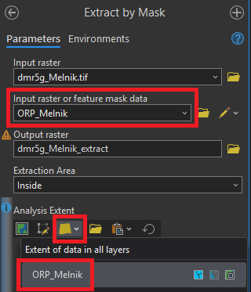 nastavení parametrů funkce Extract by Mask
- 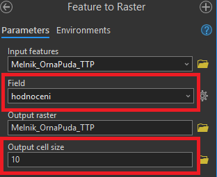 nastavení parametrů funkce Feature to Raster
 nastavení Environments funkce Feature to Raster
nastavení Environments funkce Feature to Raster nastavení parametrů nástroje Reclassify pro rastr sklonitosti
nastavení parametrů nástroje Reclassify pro rastr sklonitosti- 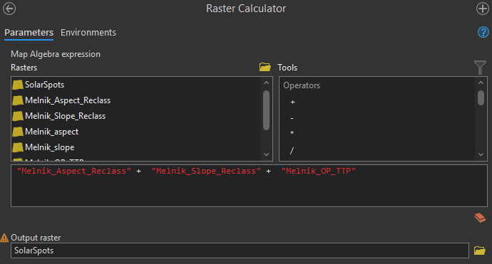 nástroj Raster Calculator
- 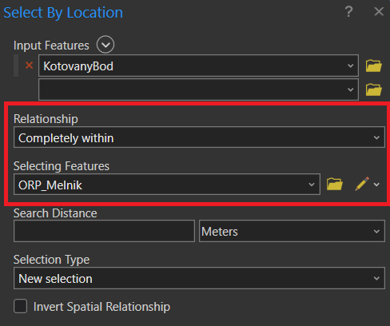 výběr prvků na základě polohy
 nastavení parametrů funkce Visibility
nastavení parametrů funkce Visibility nastavení funkce Summary Statistics
nastavení funkce Summary Statistics- 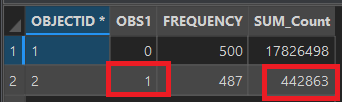 počet pixelů viditelných z dané lokality
- 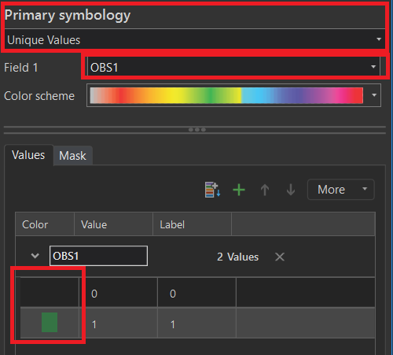 nastavení symbologie rastru viditelnosti
- 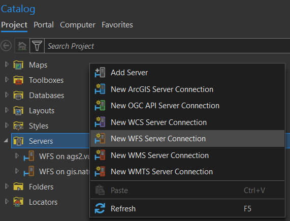 připojení WFS serveru
- 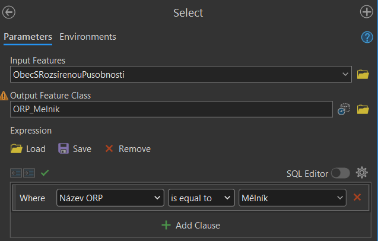 výběr prvku v nástroji Select
- 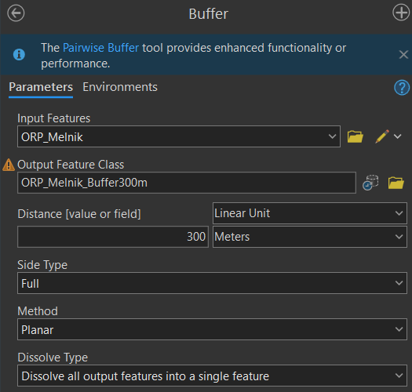 nastavení parametrů nástroje Buffer
- 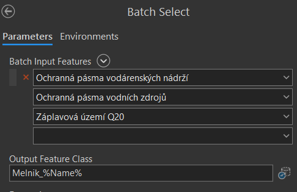 práce s proměnnou %Name% v názvu vrstvy
- 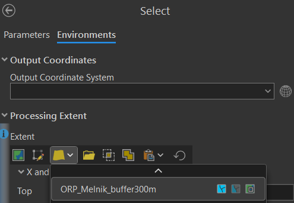 nastavení rozsahu zpracování v nástroji Select
- 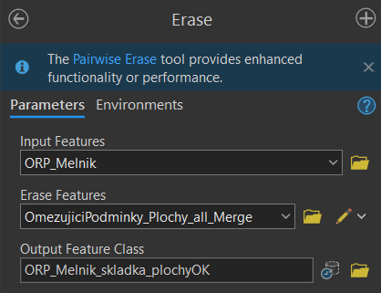 nastavení parametrů nástroje Erase
- 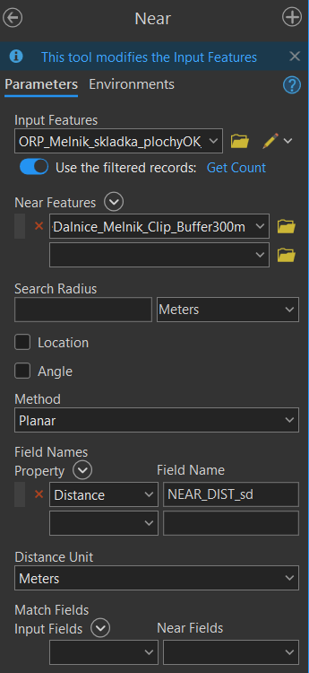 nastavení parametrů nástroje Near
- nastavení parametrů funkce Export Raster
- nastavení parametrů funkce Extract by Mask
 nastavení parametrů nástroje Buffer
nastavení parametrů nástroje Buffer nastavení parametrů funkce Export Raster
nastavení parametrů funkce Export Raster nastavení parametrů funkce Mosaic To New Raster
nastavení parametrů funkce Mosaic To New Raster nastavení parametrů funkce Extract by Mask
nastavení parametrů funkce Extract by Mask- nastavení rozsahu zpracování v nástroji Select
 nastavení parametrůfunkce Summary Statistics
nastavení parametrůfunkce Summary Statistics nastavení parametrů funkce Tabulate Intersection
nastavení parametrů funkce Tabulate Intersection
{kind=link}
{kind=link}
{kind=link}
{kind=link}
{kind=link}
{kind=link}
{kind=link}
{kind=link}
{kind=link}
{kind=link}
{kind=link}
{kind=link}
{kind=link}
Výstup
Forma a obsah semestrální práce
Výstup lze odevzdat jako:
a. tištěný mapový poster o velikosti min. A2, který bude obsahovat základní charakteristiku území ORP (rozloha, počet obyvatel a slovní popis území), zadání jednotlivých analýz a zejména mapové vizualizace výstupů všech analýz (včetně pohledu 3D scény*), které budou doprovozeny textem interpretujícím výsledky (např. kolik % plochy ORP je vhodných pro výstavbu daného objektu, které lokality a proč byly vybrány jako nejvhodnější).
b. tištěný dokument, který bude obsahovat textovou část a obrazové přílohy. V textové části bude uvedena základní charakteristika území ORP (rozloha, počet obyvatel a slovní popis území), zadání jednotlivých analýz a text interpretující výsledky (např. kolik % plochy ORP je vhodných pro výstavbu daného objektu, které lokality a proč byly vybrány jako nejvhodnější). Obrazové přílohy pak budou tvořit mapové vizualizace výstupů všech analýz (včetně pohledu 3D scény*).
c. webovou mapovou aplikaci/story mapu, která bude obsahovat základní charakteristiku území ORP (rozloha, počet obyvatel a slovní popis území), zadání jednotlivých analýz a zejména vizualizace výstupů všech analýz ve formě webových map (včetně pohledu 3D scény*), které budou doprovozeny textem interpretujícím výsledky (např. kolik % plochy ORP je vhodných pro výstavbu daného objektu, které lokality a proč byly vybrány jako nejvhodnější).
*3D scénu lze vytvořit ve webovém prostředí a v tištěném výstupu na ní pouze vhodně odkázat (link, QR kód)
Termín odevzdání: čtvrtek 29. ledna 2026